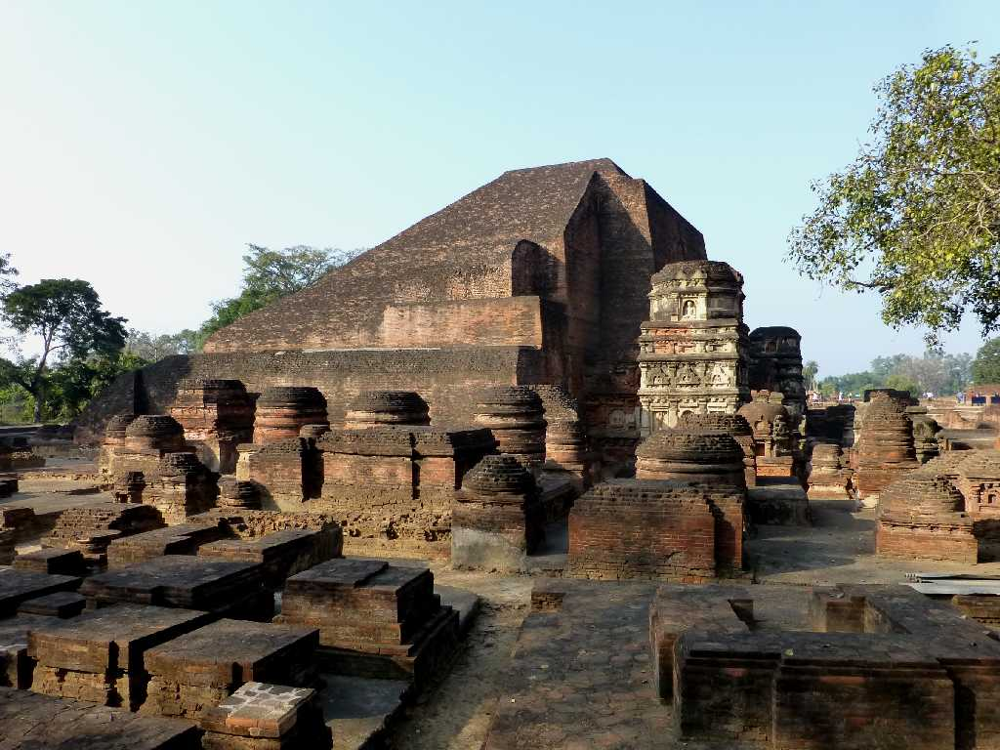
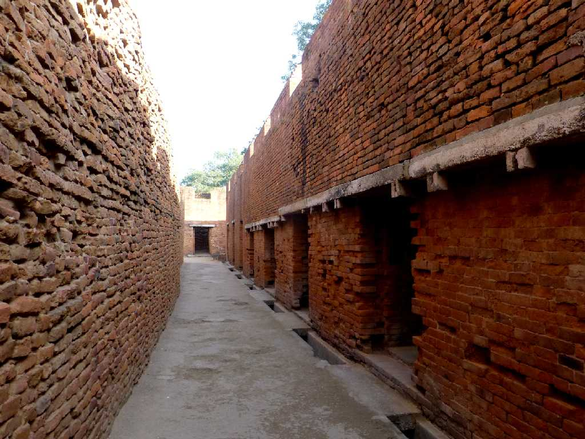
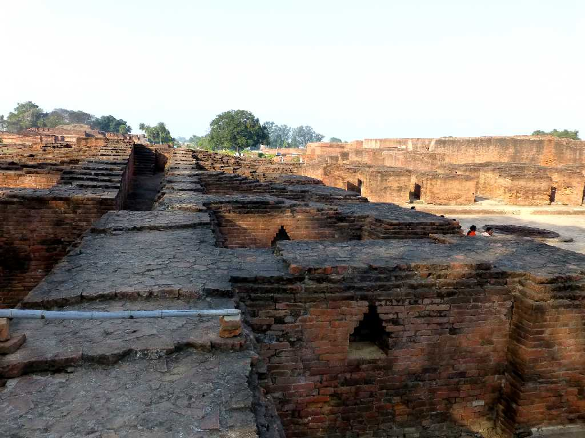
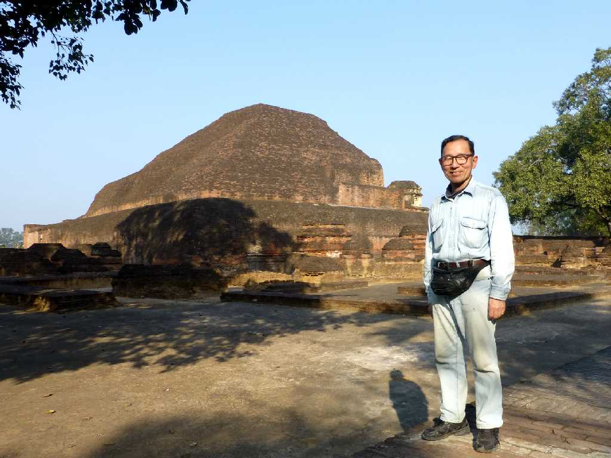

Sariputta Stupa Nalanda University Nalanda
5世紀頃に創設され１万人の学生が学んでいた最大の仏教大学

Buddhist Institute Nalanda University

Buddhist Vihara Nalanda University

February 3 2015 Sariputta Stupa
Buddha 9-10th century Nalanda Archaeologicall Museum
ナーランダの仏像 ナーランダ考古学博物館